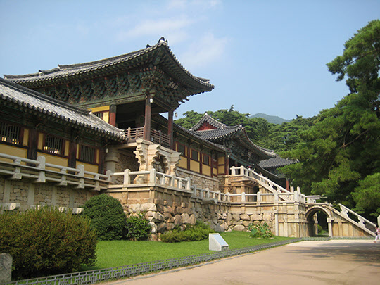
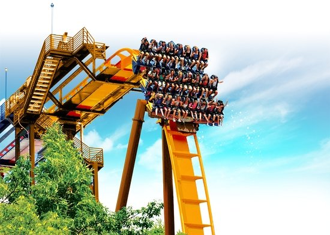
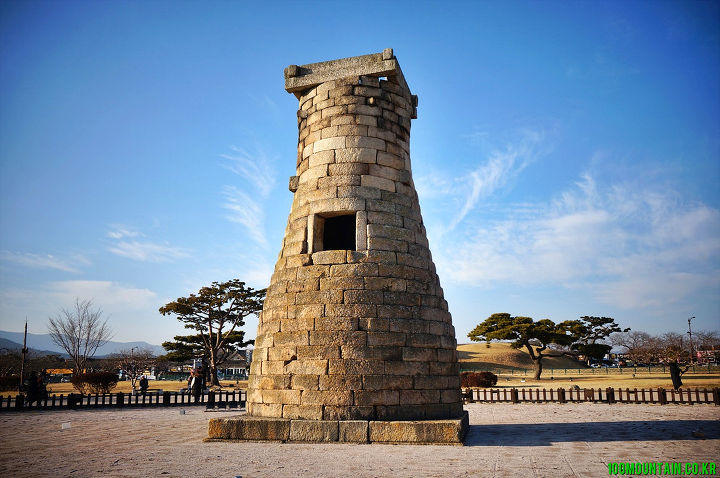
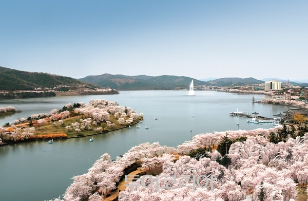

PathFinder
경주 Kyeongju
대한민국의 현재와 과거가 공존하는 곳, 유적지가 가득한 도시 경주에 오신 것을 환영합니다:)
원하시는 관광지의 이미지를 선택하세요. 선택한 관광지에 대한 경로를 만들어드립니다.
    신라의 잔해 짜릿함이 넘치는 신라의 천문대 추억을 체험하는 관광과 문화의 공존 불국사 경주월드 첨성대 추억의 달동네 보문단지